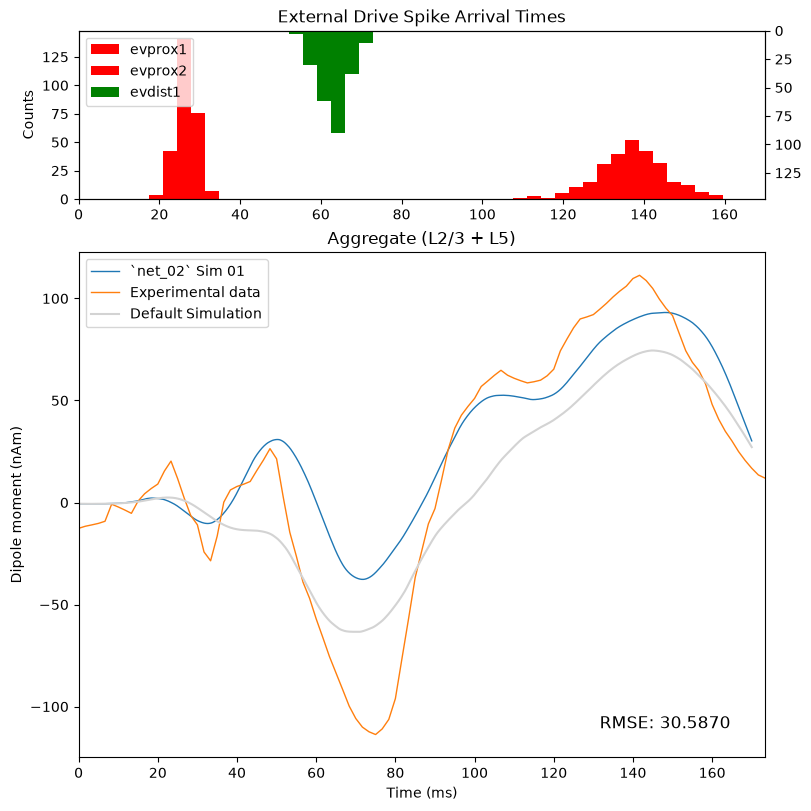
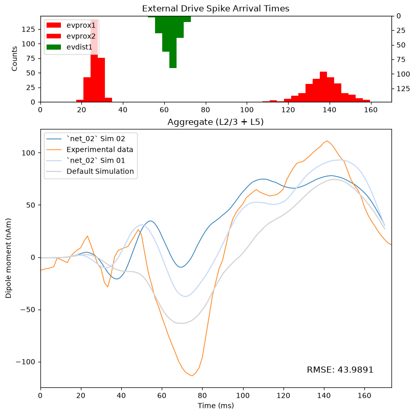

4.9 Adjusting Network Parameters And Testing Hypotheses
Hand Tuning Drive Parameters
In the previous section, we focused on adjusting evoked drive parameters to develop hypotheses about differences between our model and experimental data.
In this section, we'll explore hand tuning parameters of the local network.
As we discussed in the previous section, we generally recommend starting by hand-tuning the evoked drives of one of our default networks when working with experimental ERP data. Changing the local network should generally be motivated by a specific scientific hypothesis about differences in the population being studied.
Let's first look at the properties of the individual cell types in the network.
These are stored in the cell_types attribute of the
network object. For example, we can inspect the available cell types by
printing the keys in the cell_types data dictionary.
print(list(net_default_gui.cell_types.keys()))
Each cell type is essentially a dictionary that contains a
Cell object as well as metadata describing the cell
type.
Below, we examine a subset of the Cell object's
parameters.
sect_locwill show which sections make up the "proximal" and "distal" connection pointssectionsprovides the detailed geometry for each section of the celltypesynapsesdefines reversal potential, rise time, and decay time for each synapse type
l5_pyr_celltype = net_default_gui.cell_types["L5_pyramidal"]
l5_pyr_object = l5_pyr_celltype["cell_object"]
print(
l5_pyr_object.sect_loc,
l5_pyr_object.sections,
l5_pyr_object.synapses,
sep="\n\n"
)
If we look at any particular section, we can see that there
are additional attributes (some public, some private) that aren't
explicitly displayed when we print the Section object
above. We can inspect them using the object's __dict__
l5_pyr_soma = l5_pyr_object.sections["soma"]
print(
'Printout for sections["soma"]:',
f" {l5_pyr_soma}",
'\nAttributes for sections["soma"]:',
f" {list(l5_pyr_soma.__dict__.keys())}",
sep="\n",
)
While the keys above correspond to attributes of the
Section object, they are not displayed when printing the
value for any particular section, as they are not part of the
Section object's public-facing representation.
This means we can only access them by using attribute syntax, as
opposed to dictionary syntax. For example, we can inspect the mechanisms
for the soma with:
l5_pyr_object.sections["soma"].mechs
We could also use the to_dict() method of the
Cell object to store all of the cell parameters as a
dictionary. However, we cannot use the output to
update parameters, only to inspect them.
Since the dictionary is quite large, we do not print the output of
to_dict() below, but if you would like to see it, you can
un-comment the cell and rerun it.
# l5_pyr_object.to_dict()
While it's important to understand how to access and update the cell parameters, the rest of this section will focus on making changes to the weights (strengths) of the connections in the local network. We'll once again use the default network as our starting point for hand-tuning parameters.
For this example below, imagine that the default simulation represents a neurotypical population performing the threshold-level tactile-detection task, and the experimental data represents an autism spectrum disorder (ASD) population performing the same tactile detection task.
In this hypothetical setup, the task is the same, but the populations differ. (Note that we will still use the suprathreshold experimental data, but we are imagining that it represents our ASD population rather than a different experimental condition).
We'll start, once again, from the figure below.
fig = plot_initial_gui_figure(
net_default_gui,
processed_dipole,
suprathreshold_dpl,
)

Note that, in this setup, we are starting with an existing model for the neurotypical population. We will use this model as a starting point to develop a new model for our ASD population.
Let's say we know the specific ASD population we’re studying has sensory hypersensitivity, which we think is responsible for the observed differences in the ERP signals. Specifically, we think differences in E-I balance in the local cortical column are responsible.
Let's consider some hypotheses for the observed differences between the populations.
One possibility is that there's increased amplification of our sensory inputs in this local cortical circuit. In this case, we would expect stronger excitatory connections between cells in the network.
A second possibility is that there is reduced inhibitory regulation of the pyramidal neurons. In this case, we would expect weaker inhibitory connections onto the pyramidal neurons.
We can test each hypothesis in turn by changing the weights of the corresponding connections in the model and examining how those changes affect the simulated ERP.
The connections and their associated parameters are found in the
connectivity attribute of the Network object.
Since the connectivity object returns a list of connections, we can
print the first entry to examine its properties
net_default_gui.connectivity[0]
This particular entry in the connectivity list shows the parameters that specify the connections between L2 pyramidal neurons.
The cell counts, connection probability,
and loc describe how many cells are connected and the
connection location, while lamtha determines how the
connection probability varies with the distance between cells.
delay specifies the latency between a presynaptic spike and
postsynaptic response, while threshold specifies the
voltage threshold for detecting a presynaptic spike.
To test our first hypothesis, let's adjust the weight of all excitatory connections in the local network. This includes the recurrent connections between pyramidal neurons, and the connections from pyramidal neurons onto interneurons.
First, let's create a new Network object by "deep
copying" the default network. We'll call this network
net_02
from copy import deepcopy # noqa
net_02 = read_network_configuration("gui_default.json")
Now, rather than individually adjusting the weight for each
connection type, we can use the set_global_synaptic_gains()
method of the Network object to adjust entire
classes of connections at once.
This method accepts arguments that correspond to one of four classes of connections
excitatory to excitatory (
e_e)excitatory to inhibitory (
e_i)inhibitory to inhibitory (
i_i)inhibitory to excitatory (
i_e)
To test our first hypothesis, let's try doubling the e_e
and e_i gains to represent the increased amplification of
sensory inputs. We can then print the global gain values using the
get_global_synaptic_gains() method to ensure that the gains
were correctly updated.
net_02.set_global_synaptic_gains(
e_e=2,
e_i=2,
)
print(net_02.get_global_synaptic_gains())
We can then simulate the network with the updated gains
with chosen_backend(ncores):
net_02_dpl_01 = simulate_dipole(
net=net_02,
tstop=170.0,
n_trials=1,
dt=0.025,
)
processed_dpl_02_01 = net_02_dpl_01[0].copy()
processed_dpl_02_01.smooth(30).scale(3000)
# mod_shrink_output
# plot the data using our custom function
fig = plot_initial_gui_figure(
net_02,
processed_dpl_02_01,
suprathreshold_dpl,
"`net_02` Sim 01",
)
fig.axes[1].plot(
processed_dipole.times,
processed_dipole.data["agg"],
label="Default Simulation",
color="#D3D3D3",
)
fig.axes[1].legend();

Compared to our default simulation, the root mean squared error is actually worse. However, there are parts of the simulation that look more representative of the data.
Around the second proximal drive, the amplitude of the signal is higher and more closely matches the two-peak shape of the data. The fit around the first proximal drive also looks somewhat better, specifically near the peak around 50ms.
In this hypothetical scenario, this could be a reasonable starting point for further exploration and hand tuning. From here, we could experiment with different gain values, or we could keep the updated global gains and further hand tune the evoked drives to see if we can improve the simulation further.
In the previous examples, we've re-simulated the same
Network object after changing parameters, while separately
saving the dipole object for each simulation.
Note, however, that re-simulating the same network object
overwrites both the network parameters and any data associated
with the network simulation, such as the spiking data in
CellResponse
Before moving on, let's create a copy of the network in case we want
to view the CellResponse data at a later time. This also
enables us to continue hand-tuning the network from the point we left
off, without needing to re-simulate it later. We'll call the copy
net_02_checkpoint_01
net_02_checkpoint_01 = deepcopy(net_02)
Note that you can also save a copy of the updated network file to
your local machine with the write_network_configuration()
method, and you can then load it at a later time with the same
read_network_configuration() method used above.
from hnn_core import write_network_configuration
save_to_disk = False
if save_to_disk:
write_network_configuration(
net_02_checkpoint_01,
"net_02_checkpoint_01.json",
)
Rather than continuing to refine the first simulation at this time, let's test our second hypothesis that the differences in the signals are due to reduced inhibitory regulation of the pyramidal neurons.
To test this hypothesis, we'll reset the excitatory global gains to
their default values and instead reduce the i_e global
gain, which controls the strength of inhibitory connections onto
excitatory cells.
Let's try reducing this gain by 50% and see how this change affects the simulated ERP. In this case, we predict that less inhibition of the pyramidal neurons will yield an overall stronger response.
net_02.set_global_synaptic_gains(
e_e=1,
e_i=1,
i_e=0.5, # i.e., 50%
)
print(net_02.get_global_synaptic_gains())
with chosen_backend(ncores):
net_02_dpl_02 = simulate_dipole(
net=net_02,
tstop=170.0,
n_trials=1,
dt=0.025,
)
processed_dpl_02_02 = net_02_dpl_02[0].copy()
processed_dpl_02_02.smooth(30).scale(3000)
# mod_shrink_output
# plot the data using our custom function
fig = plot_initial_gui_figure(
net_02,
processed_dpl_02_02,
suprathreshold_dpl,
"`net_02` Sim 02",
)
fig.axes[1].plot(
processed_dpl_02_01.times,
processed_dpl_02_01.data["agg"],
label="`net_02` Sim 01",
color="#C8DAF9"
)
fig.axes[1].plot(
processed_dipole.times,
processed_dipole.data["agg"],
label="Default Simulation",
color="#D3D3D3",
)
fig.axes[1].legend();

In this case, the new simulation looks notably worse than the
previous simulation. This suggests that perhaps our proposed mechanism
(decreasing the strength of the i_e connections) isn't
sufficient to account for the differences in these populations' dipole
signals, at least not on its own.
But the point here isn't that our parameter changes have given us a definite answer either way. The point is that we start with observed differences between our simulation and the data, and we propose testable parameter changes based on our hypotheses about the underlying differences in the signal generators. The model allows us to test our predictions through simulations.
In this case, it looks like reducing inhibitory connections did not produce a better match between the simulation and the data. Between these two new simulations, our first simulation appears to be a more promising direction to explore. It suggests that, in the context of this exercise, increased excitatory recruitment in the local network could be a plausible explanation for some of the observed differences in the dipoles.
However, it's important to emphasize that the aggregate dipole alone does not give us the full picture of what's happening in the model. We can't tell from this figure why the fit improved, or whether the underlying activity is biologically plausible.
In the next section, we will examine the underlying circuit dynamics to better understand what changed in the model between the two simulations. We will also give an example of how to identify potential targets for validation in follow-up experiments